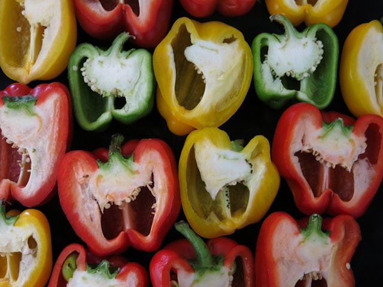

Stuffed Peppers

Learn how to cook stuffed bell peppers with this recipe. A
simple combination of rice, meat, and veggies to make this
delicious meal!
Ingredients
- 1 pound 90% lean ground beef
- 1 1/4 teaspoons salt, divided
- Heaping 1/4 teaspoon baking soda
- 3 large, red, yellow, or orange bell peppers, cut in
half from the stem to the bottom and cored
- 1 medium yellow onion, finely chopped
- 3 cloves garlic, minced
- 1 1/2 teaspoons chili powder
- 1/2 teaspoon ground cumin
- 1/4 teaspoon dried pregano
- 1 (8-oz can) tomato sauce
- 1 cup cooked rice
- 1 1/2 cups shredded Monterey Jack or Cheddar Jack cheese
Steps
- Preheat the oven to 425 F and set an oven rack in the middle
position
- Tenderize the beef: In a medium bowl, using your hands, mash the
beef with 1 teaspoon of the salt and the baking soda. Let sit for
20 minutes while you continue with the recipe.
- Line a 9x13-inch baking dish with aluminum foil for easy clean-up.
Place the peppers, cut side up, in the baking dish; drizzle with 1
tablespoon of the oiland sprinkle with the remaining 1/4 teaspoon
salt.
- Roas the peppers for about 20 minutes, until slightly browned and
tender-crsip. A bit of liquid will accumulate in the bottom of the
peppers; that's okay.
- Meanwhile, heat the remaining 2 tablespoons of olive oil over
medium heat in a large nonstick skillet. Add the onion and cook,
stirring frequently, until soft and translucent, 3 to 4 minutes.
Add the garlic and cook 1 minute more; do no brown. Add the ground
beef mixture, chili powder, cumin, and oregano and increase the
heat to medium high. Cook, breaking the meat up with a wooden spoon,
until the meat is browned and almost cooked through;4 to 5 minutes.
Add the tomato sauce and bring to a boil; reduce the heat to medium
low and cook, uncovered, until the meat is cooked through, 2 to 3 minutes.
Add the cooked rice and 3/4 cup of the cheese, and stir until melted.
Remove the skillet from the heat.
- Remove the peppers from the oven and spoon the meat filling evenly
into the peppers. Sprinkle with the remaining 3/4 cup cheese and place
back in the oven. Roast for 10 to 15 minute, until the filling is hot
and the cheese is melted and bubbling, and serve.
Home